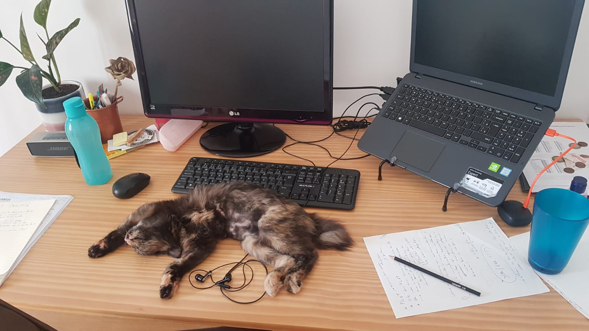

Semana 7 - 14/02 a 20/02
Escrevo este post mais cedo do que de costume, mas não muito. Ao invés de estar correndo contra o tempo para não perder o streak, estou escrevendo estas linhas por volta das 18h10 do domingo. Acabo de acordar de 2h de soneca e ainda me encontro um pouco desorientado, então vamos por partes, conforme as coisas forem emergindo da minha mente.
Em primeiro lugar acho que é bom pontuar que ontem completou uma semana que a gatinha Clarice está morando conosco aqui em casa. Frequentemente eu e minha namorada comentamos um com o outro sobre o quão impressionante é conseguir se apaixonar por um bixinho tão rapidamente. Será que é assim com todo animalzinho ou a Clarice é especial? Ela é muito carinhosa e brincalhona - não sei se estaríamos arriados assim se fosse um gato mais chatonildo.
Ontem levei ela à veterinária e, aparentemente, ela não tem nenhum problema. Falta vacinar e vai precisar de um anti-pulga, mas de resto está tudo ok. Fiquei muito satisfeito quando a veterinária falou: “dá muito para ver que ela é um animalzinho feliz”.
A propósito, abaixo vai uma foto da coisica.

Esta semana as TVs foram instaladas nas paredes e plantas foram penduradas. A casa está muito próxima de sua forma final. Falta a mesa de jantar e talvez modificar um pouco os escritórios.
No trabalho eu evoluí pouco mas não foi uma semana nula. Estou um pouco chateado que não programei nada. No entanto, assisti uma apresentação super legal do Flavio Clesio, Staff engineer na Artsy. O blog que ele mantém é sensacional. Inclusive, pode ser visitado aqui.
Malhei o suficiente para não ser uma semana parada e fiquei bem satisfeito com as corridas que dei. Mas após a corrida de sábado (4km num ritmo satisfatório) as minhas costas simplesmente travaram. Foi uma travada muscular, bem diferente das travadas que costumavam acontecer comigo. De qualquer forma estou tomando dorflex porque se não o fizesse, não conseguiria levantar da cama.
Na sexta-feira saí para encontrar amigos no bar e mais uma vez consegui não beber. Fiquei bem satisfeito com isso. Mas fumei uns 5 cigarros lá. Uma muleta, eu sei. Baby steps. A propósito, o encontro foi por ocasião do aniversário do amigo cuja casa limpei (e relatei num post pretérito). Ele parece melhor, conseguiu terminar de limpar a própria casa. E está decidido a ir embora de São Paulo num esforço para cuidar mais de si. Torço demais por ele.
Li muito pouco essa semana. Precisar dar o gás no Beyond Order, do Jordan Peterson. Ler em inglês requer um comprometimento de tempo maior do que em português e isso tem feito eu evitar a tarefa.
Acho que é isso. Até a próxima, se é que alguém além de mim mesmo lê estas linhas.